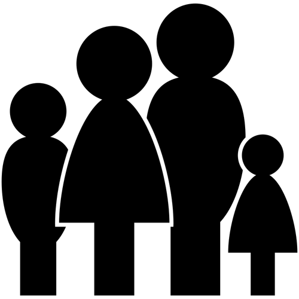

Recetario Italiano by Andrea Seijas is licensed under a Creative Commons Reconocimiento-NoComercial-CompartirIgual 4.0 Internacional License.

15 minutos
4 personas

Fácil
-400 gramos de espaguetis
-2 huevos (preferiblemente de mediano tamaño)
-150 gramos de queso curado (preferiblemente parmesano)
-120 gramos de bacon en tiras
-Sal (al gusto)
-Pimienta (al gusto)
-Un chorrito de aceite
Paso 1: Ponemos una cazuela a hervir con un puñado de sal. Una vez hirviendo, añadimos los espaguetis y dejamos cocer 10 minutos
Paso 2: En un bol añadimos las yemas de los huevos y el queso rallado y removemos con un tenedor
Paso 3: En una sartén, añadimos un chorrito de aceite y agregamos el bacon. Cuando esté frito, retiramos.
Paso 4:
Añadimos los espaguetis al bol reservado junto el bacon y agregamos un poco de caldo de la cocción.
Removemos para que los espaguetis absorban la salsa
Paso 5: Una vez finalizado el paso anterior, añadir abundante pimienta negra y servir inmediatamente.
Recetario Italiano by Andrea Seijas is licensed under a Creative Commons Reconocimiento-NoComercial-CompartirIgual 4.0 Internacional License.